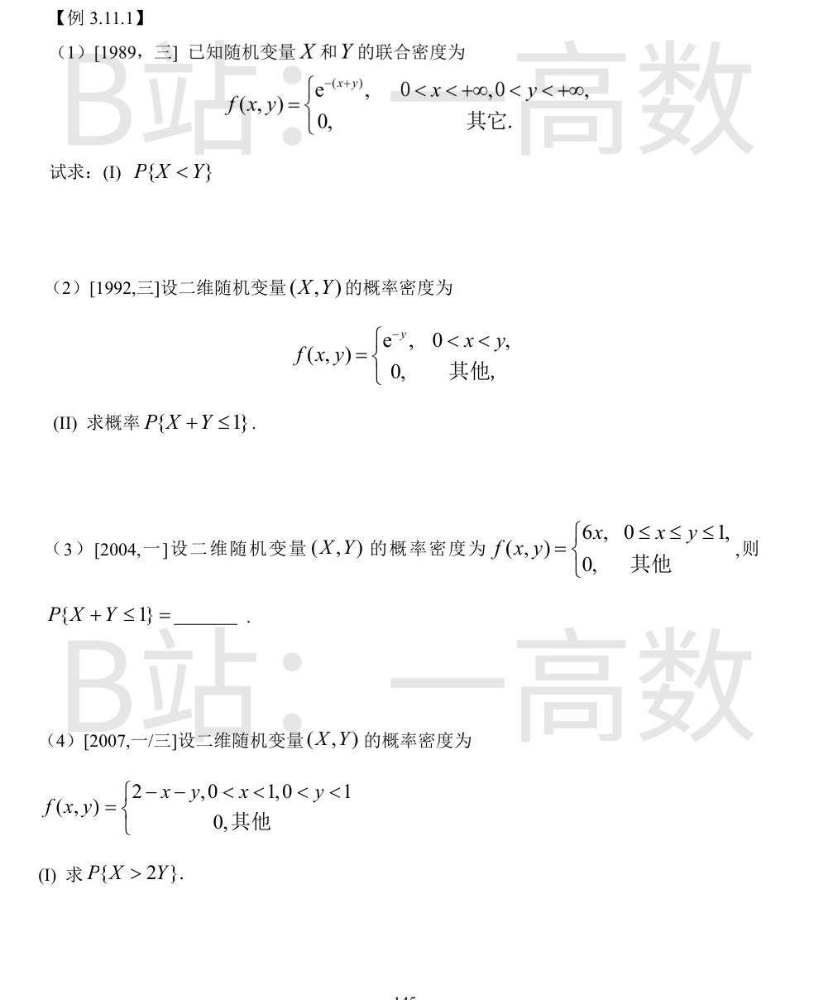
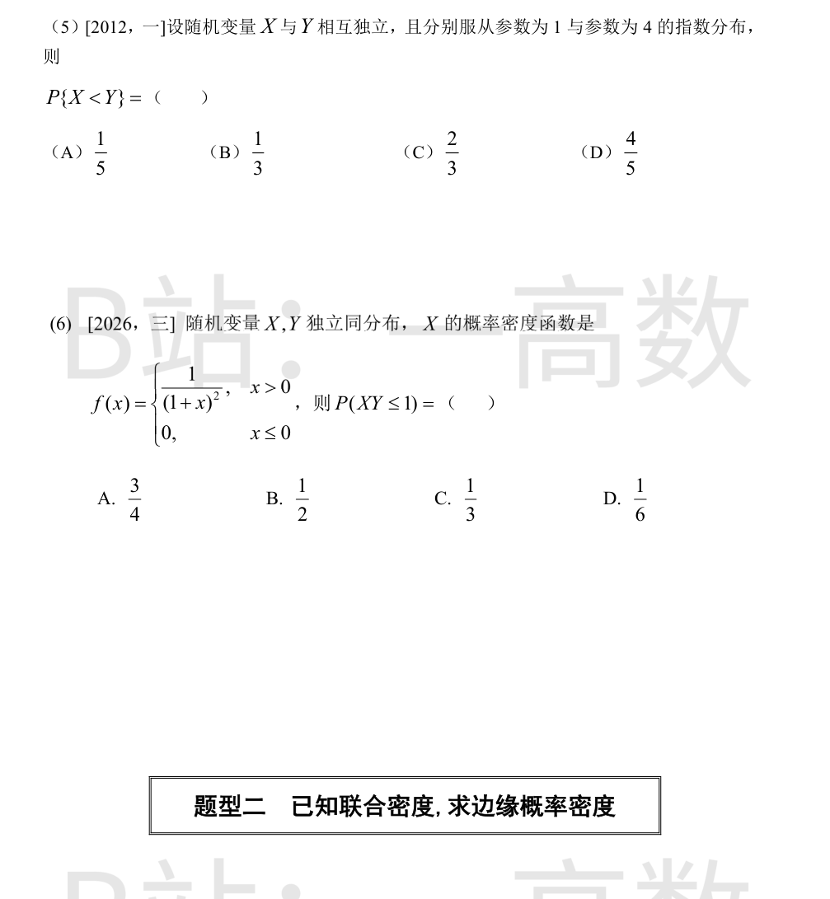
联合密度仅在第一象限非零，积分区域为 0<x<y<+\infty：
$$P\{X<Y\}=\int_0^{+\infty}dx\int_x^{+\infty}e^{-(x+y)}\,dy=\int_0^{+\infty}e^{-x}\cdot e^{-x}\,dx=\int_0^{+\infty}e^{-2x}\,dx=\frac12.$$
（由对称性 X<Y 与 X>Y 各占概率一半。）
区域 D：0<x<y 且 x+y≤1，即 0<x<\frac12，x<y<1-x。
$$P\{X+Y\le1\}=\int_0^{1/2}dx\int_x^{1-x}e^{-y}\,dy=\int_0^{1/2}\left(e^{-x}-e^{-(1-x)}\right)dx$$
$$=\left(1-e^{-1/2}\right)-e^{-1}\left(e^{1/2}-1\right)=1-2e^{-1/2}+e^{-1}=\left(1-\frac{1}{\sqrt e}\right)^2\approx0.155.$$
区域：0≤x≤\frac12，x≤y≤1-x。
$$P=\int_0^{1/2}dx\int_x^{1-x}6x\,dy=\int_0^{1/2}6x(1-2x)\,dx=\left[3x^2-4x^3\right]_0^{1/2}=\frac34-\frac12=\frac14.$$
区域：0<x<1，0<y<x/2。
$$P\{X>2Y\}=\int_0^{1}dx\int_0^{x/2}(2-x-y)\,dy=\int_0^{1}\left[(2-x)\frac{x}{2}-\frac12\cdot\frac{x^2}{4}\right]dx$$
$$=\int_0^{1}\left(x-\frac{x^2}{2}-\frac{x^2}{8}\right)dx=\int_0^{1}\left(x-\frac{5x^2}{8}\right)dx=\frac12-\frac{5}{24}=\frac{7}{24}.$$
f_X(x)=e^{-x}(x>0)，f_Y(y)=4e^{-4y}(y>0)，独立。
$$P\{X<Y\}=\int_0^{+\infty}4e^{-4y}\,dy\int_0^{y}e^{-x}\,dx=\int_0^{+\infty}4e^{-4y}(1-e^{-y})\,dy=4\left(\frac14-\frac15\right)=\frac15.$$
（或直接用公式 P{X<Y}=\frac{\lambda_X}{\lambda_X+\lambda_Y}=\frac{1}{1+4}=\frac15。）选 (A)。
联合密度 f(x)f(y)=\frac{1}{(1+x)^2(1+y)^2}（x,y>0）。
$$P\{XY\le1\}=\int_0^{+\infty}\frac{dx}{(1+x)^2}\int_0^{1/x}\frac{dy}{(1+y)^2}=\int_0^{+\infty}\frac{1}{(1+x)^2}\left[1-\frac{1}{1+1/x}\right]dx$$
$$=\int_0^{+\infty}\frac{1}{(1+x)^2}\cdot\frac{1}{1+x}\,dx=\int_0^{+\infty}\frac{dx}{(1+x)^3}=\left[-\frac{1}{2(1+x)^2}\right]_0^{+\infty}=\frac12.$$
选 (B)。
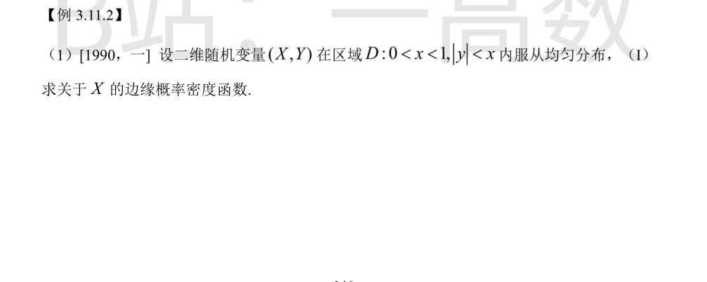
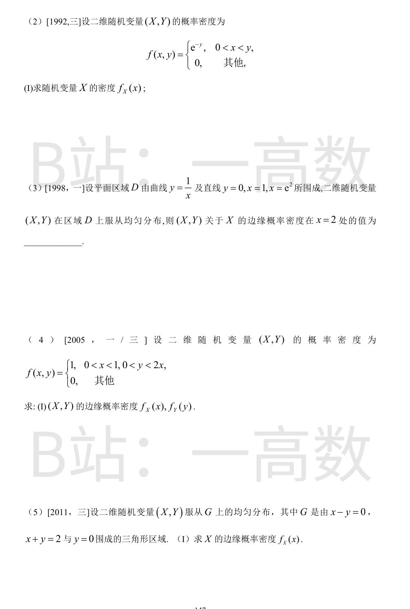
D 的面积 S=\int_0^{1}2x\,dx=1，故 f(x,y)=1（(x,y)\in D）。
对 0<x<1，y 的变动范围为 -x<y<x：
$$f_X(x)=\int_{-x}^{x}1\,dy=2x.$$
其他处 f_X(x)=0。
$$f_X(x)=\int_x^{+\infty}e^{-y}\,dy=\left[-e^{-y}\right]_x^{+\infty}=e^{-x},\quad x>0;$$
x≤0 时 f_X(x)=0。
$$S=\int_1^{e^2}\frac{1}{x}\,dx=\ln e^2=2,\qquad f(x,y)=\frac12\ (\text{D 内}).$$
$$f_X(x)=\int_0^{1/x}\frac12\,dy=\frac{1}{2x},\quad 1\le x\le e^2.$$
故 f_X(2)=\frac{1}{2\cdot2}=\frac14。
区域面积 S=\int_0^1 2x\,dx=1，f(x,y)=1。
$$f_X(x)=\int_0^{2x}1\,dy=2x,\quad 0<x<1.$$
0<y<2 时 x 需满足 \frac{y}{2}<x<1：
$$f_Y(y)=\int_{y/2}^{1}1\,dx=1-\frac{y}{2}.$$
其他处为 0。
三角形顶点为 (0,0),(2,0),(1,1)，面积 S=\frac12\cdot2\cdot1=1，故 f(x,y)=1（G 内）。
0≤x≤1 时 y 从 0 到 x；1<x≤2 时 y 从 0 到 2-x：
$$f_X(x)=\begin{cases}\int_0^{x}1\,dy=x, & 0\le x\le1\\ \int_0^{2-x}1\,dy=2-x, & 1<x\le2\\ 0, & \text{其他}\end{cases}$$
校验：\int_0^1 x\,dx+\int_1^2(2-x)\,dx=\frac12+\frac12=1。
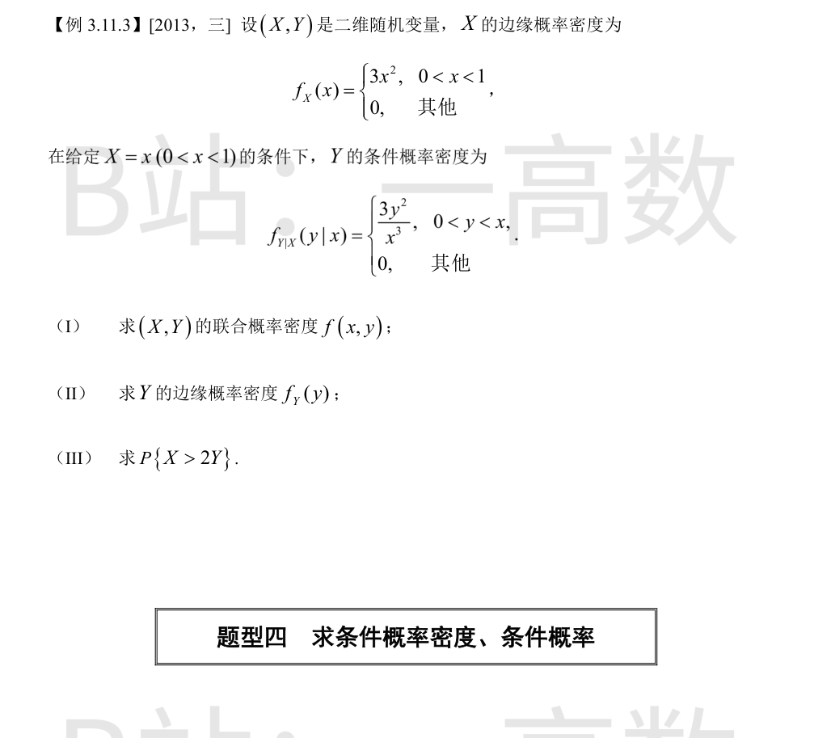
$$f(x,y)=f_X(x)\,f_{Y|X}(y|x)=3x^2\cdot\frac{3y^2}{x^3}=\frac{9y^2}{x},\quad 0<y<x<1,$$
其他处为 0。
校验：\int_0^1 dx\int_0^x \frac{9y^2}{x}\,dy=\int_0^1\frac{3x^3}{x}\,dx=\int_0^1 3x^2\,dx=1。
0<y<1 时：
$$f_Y(y)=\int_y^{1}\frac{9y^2}{x}\,dx=9y^2\left[\ln x\right]_y^{1}=9y^2(0-\ln y)=-9y^2\ln y.$$
其他处为 0。（可验证 \int_0^1 -9y^2\ln y\,dy=1。）
区域：0<x<1，0<y<\frac{x}{2}。
$$P\{X>2Y\}=\int_0^{1}dx\int_0^{x/2}\frac{9y^2}{x}\,dy=\int_0^{1}\frac{9}{x}\cdot\frac13\cdot\frac{x^3}{8}\,dx=\int_0^{1}\frac{3x^2}{8}\,dx=\frac18.$$
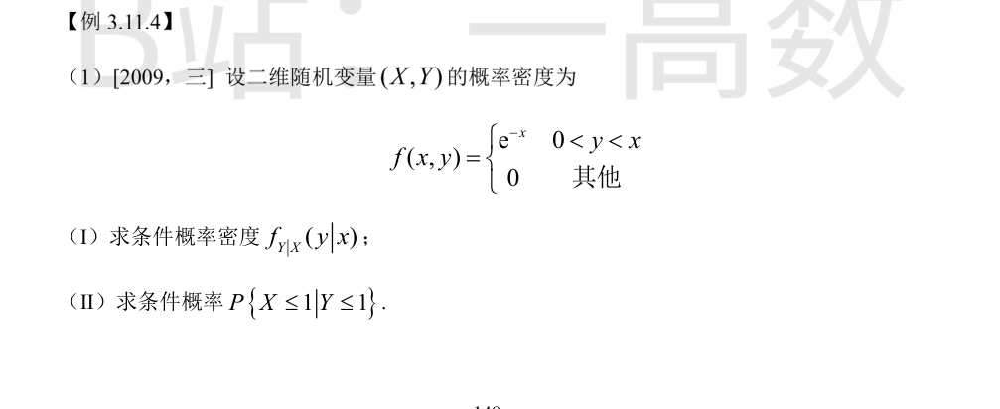
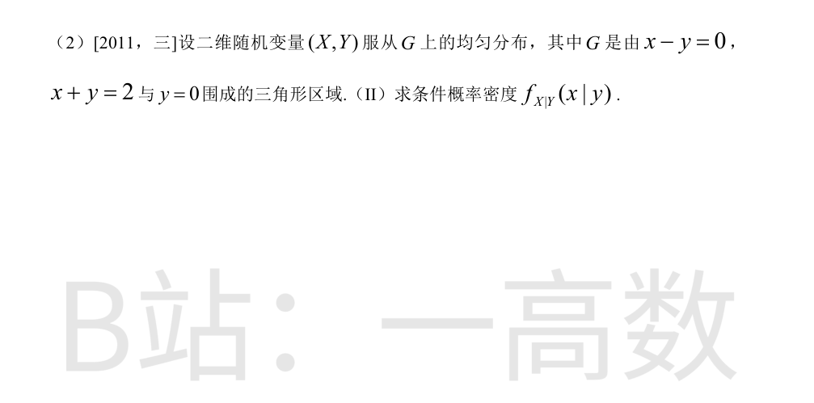
x>0 时的边缘密度：
$$f_X(x)=\int_0^{x}e^{-x}\,dy=xe^{-x}.$$
故当 x>0：
$$f_{Y|X}(y|x)=\frac{f(x,y)}{f_X(x)}=\frac{e^{-x}}{xe^{-x}}=\frac{1}{x},\quad 0<y<x,$$
其他为 0（给定 X=x 时，Y 在区间 (0,x) 内均匀分布）。
由 0<y<x 知 \{X\le1\}\subset\{Y\le1\}，故 P\{X\le1,Y\le1\}=P\{X\le1\}。
$$P\{X\le1\}=\int_0^{1}xe^{-x}\,dx=\left[-xe^{-x}-e^{-x}\right]_0^{1}=1-2e^{-1}.$$
Y 的边缘密度：f_Y(y)=\int_y^{+\infty}e^{-x}\,dx=e^{-y}\ (y>0)，故 P\{Y\le1\}=1-e^{-1}。
$$P\{X\le1\mid Y\le1\}=\frac{1-2e^{-1}}{1-e^{-1}}=\frac{e-2}{e-1}\approx0.42.$$
G 顶点 (0,0),(2,0),(1,1)，面积 1，故 f(x,y)=1（G 内）。
0<y<1 时，x 的变动范围为 y<x<2-y：
$$f_Y(y)=\int_y^{2-y}1\,dx=2-2y=2(1-y).$$
于是
$$f_{X|Y}(x|y)=\frac{f(x,y)}{f_Y(y)}=\frac{1}{2(1-y)},\quad y<x<2-y,$$
其他为 0。
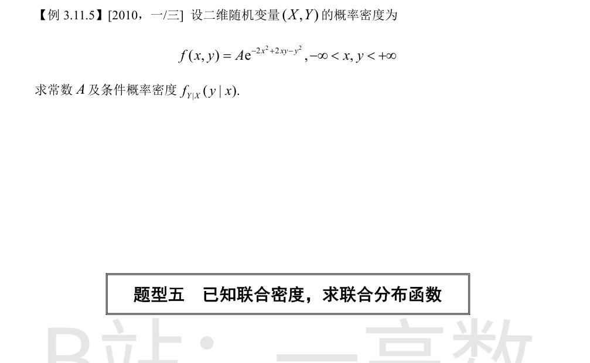
配方：-2x^2+2xy-y^2=-x^2-(y-x)^2，故 f(x,y)=Ae^{-x^2}e^{-(y-x)^2}。
由归一性（\int e^{-t^2}dt=\sqrt{\pi}）：
$$1=A\int_{-\infty}^{+\infty}e^{-x^2}dx\int_{-\infty}^{+\infty}e^{-(y-x)^2}dy=A\sqrt{\pi}\cdot\sqrt{\pi}=A\pi \ \Rightarrow\ A=\frac{1}{\pi}.$$
边缘密度：
$$f_X(x)=\frac{1}{\pi}e^{-x^2}\int_{-\infty}^{+\infty}e^{-(y-x)^2}dy=\frac{1}{\sqrt{\pi}}e^{-x^2}.$$
于是
$$f_{Y|X}(y|x)=\frac{f(x,y)}{f_X(x)}=\frac{1}{\sqrt{\pi}}e^{-(y-x)^2},\quad -\infty<y<+\infty.$$
（即 X\sim N(0,\frac12)，Y\mid X=x\sim N(x,\frac12)。）
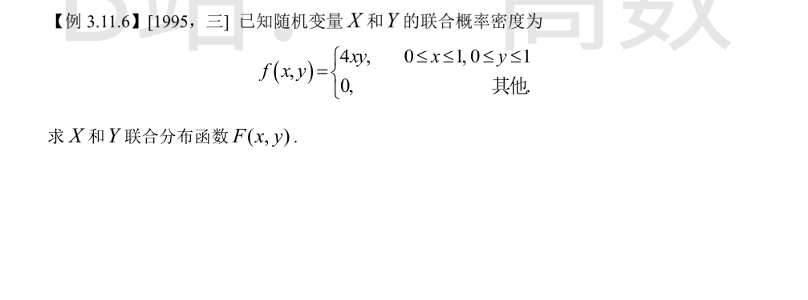
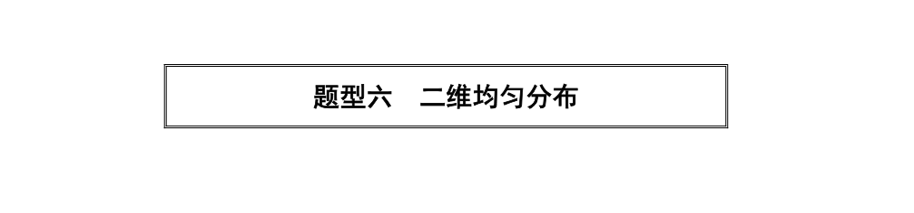
F(x,y)=\int_{-\infty}^{x}dx\int_{-\infty}^{y}f(u,v)\,dv，按 (x,y) 所在位置分块：
(1) x<0 或 y<0：F=0。
(2) 0≤x≤1, 0≤y≤1：
$$F=\int_0^{x}4u\,du\int_0^{y}v\,dv=\left(2\cdot\frac{x^2}{2}\right)\!\left(2\cdot\frac{y^2}{2}\right)=x^2y^2.$$
(3) 0≤x≤1, y>1：F=\int_0^{x}4u\,du\int_0^{1}v\,dv=x^2。
(4) x>1, 0≤y≤1：F=y^2。
(5) x>1, y>1：F=1。
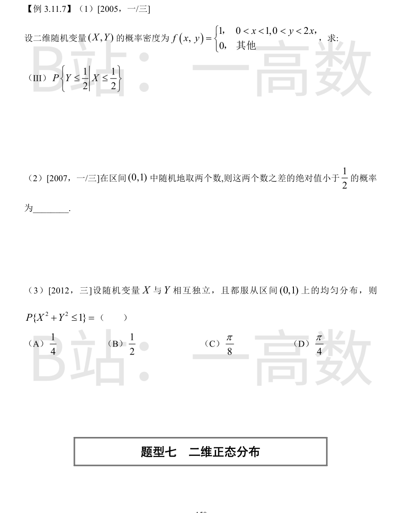
$$P\left\{X\le\frac12\right\}=\int_0^{1/2}2x\,dx=\frac14.$$
求 P{X≤1/2, Y≤1/2}：x<1/4 时 y 上界为 2x（<1/2）；x≥1/4 时上界为 1/2。
$$P\left\{X\le\frac12,\,Y\le\frac12\right\}=\int_0^{1/4}2x\,dx+\int_{1/4}^{1/2}\frac12\,dx=\frac{1}{16}+\frac18=\frac{3}{16}.$$
$$P\left\{Y\le\frac12\,\Big|\,X\le\frac12\right\}=\frac{3/16}{1/4}=\frac34.$$
设两数为 X,Y，则 (X,Y) 在单位正方形上均匀分布（密度为 1）。
所求 P\{|X-Y|<\frac12\} 为正方形内介于两直线 y=x-\frac12 与 y=x+\frac12 之间的面积。
补集为两个直角边长 \frac12 的等腰直角三角形，面积和 2\times\frac12\cdot\left(\frac12\right)^2=\frac14。
故概率为 1-\frac14=\frac34。
(X,Y) 在单位正方形 (0,1)\times(0,1) 上均匀分布（密度 1）。
区域 \{x^2+y^2\le1\} 与正方形之交为第一象限的四分之一单位圆盘，面积 \frac{\pi}{4}。
$$P\{X^2+Y^2\le1\}=\frac{\pi}{4}.$$
选 (D)。
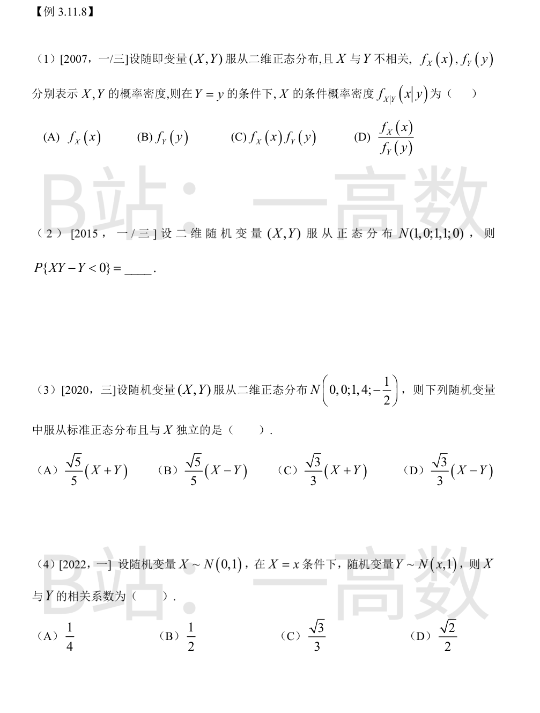
二维正态分布中不相关（\rho=0）等价于 X 与 Y 相互独立，故给定 Y=y 时 X 的条件密度就等于 X 自身的边缘密度 f_X(x)。选 (A)。
参数中 \rho=0，二维正态故 X 与 Y 独立，且 X\sim N(1,1)，Y\sim N(0,1)。
$$P\{XY-Y<0\}=P\{Y(X-1)<0\}=P\{(X-1)\ \text{与}\ Y\ \text{异号}\}.$$
X-1\sim N(0,1) 与 Y 独立，各自取正、取负的概率均为 \frac12：
$$P=P\{X-1>0\}P\{Y<0\}+P\{X-1<0\}P\{Y>0\}=\frac12\cdot\frac12+\frac12\cdot\frac12=\frac12.$$
\sigma_X^2=1,\ \sigma_Y^2=4,\ \rho=-\frac12，故 \mathrm{Cov}(X,Y)=\rho\sigma_X\sigma_Y=-1。
$$\mathrm{Var}(X+Y)=1+4+2(-1)=3,\qquad \mathrm{Var}(X-Y)=1+4-2(-1)=7.$$
(A)：\mathrm{Var}=\frac15\cdot3=\frac35\ne1；(B)：\mathrm{Var}=\frac15\cdot7=\frac75\ne1；(D)：\mathrm{Var}=\frac13\cdot7=\frac73\ne1，均非标准正态。
(C)：\mathrm{Var}\left(\frac{\sqrt3}{3}(X+Y)\right)=\frac13\cdot3=1，为标准正态；且
$$\mathrm{Cov}(X+Y,\,X)=\mathrm{Var}(X)+\mathrm{Cov}(X,Y)=1-1=0,$$
X+Y 与 X 联合正态，不相关即独立。选 (C)。
$$E[Y]=E\{E[Y\mid X]\}=E[X]=0.$$
$$\mathrm{Cov}(X,Y)=E[XY]-E[X]E[Y]=E\{X\cdot E[Y\mid X]\}=E[X^2]=1.$$
$$\mathrm{Var}(Y)=E\{\mathrm{Var}(Y\mid X)\}+\mathrm{Var}\{E[Y\mid X]\}=1+\mathrm{Var}(X)=2.$$
$$\rho_{XY}=\frac{\mathrm{Cov}(X,Y)}{\sqrt{\mathrm{Var}(X)\mathrm{Var}(Y)}}=\frac{1}{1\cdot\sqrt2}=\frac{\sqrt2}{2}.$$
选 (D)。